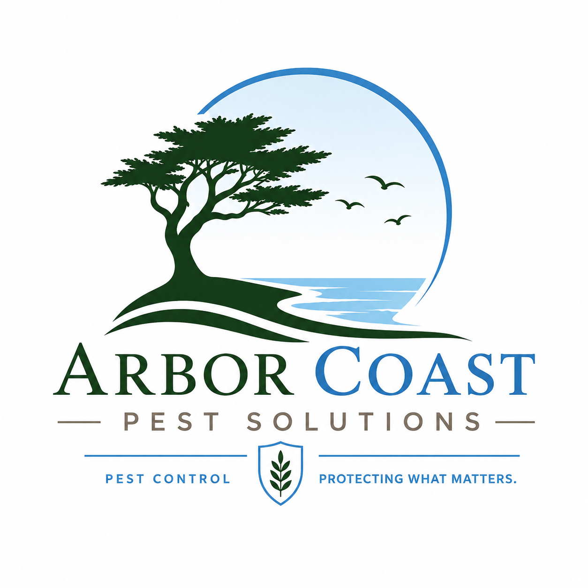

From ants in Irvine kitchens to termite damage in Newport Beach attics, Arbor Coast handles it with low-impact treatments built for coastal Southern California homes.

We handle inspections and treatment ourselves, and bring in a trusted licensed partner only for whole-structure termite tenting. Either way, you get one point of contact from inspection through clearance.
Argentine ant trails along foundations and irrigation lines are an Orange County staple. We treat the colony, not just the trail you can see, with baiting programs suited to slab-on-grade homes.
Quarterly plansGerman and American roaches favor damp crawlspaces and kitchen plumbing runs. We pair gel baiting with sanitation guidance so the population doesn't rebound a month later.
Quarterly plansBlack widow and brown widow activity around block walls, garages, and citrus trees is common near the coast. We knock down webbing and treat harborage points, not just open air.
One-time or ongoingSubterranean and drywood termites both show up in OC's coastal climate. We handle WDO inspections and localized spot treatment ourselves, and coordinate whole-structure tenting through a trusted, licensed fumigation partner on larger jobs — so you're never left managing two companies.
Free WDO reportBed bugs travel in luggage, secondhand furniture, and shared laundry rooms, and over-the-counter sprays usually just scatter them. We inspect room by room and treat with heat or targeted application depending on the space.
Inspection requiredRoof rats move along power lines and mature trees into attics — especially in older Costa Mesa and Orange neighborhoods. We exclude entry points, not just set traps.
Inspection requiredBrown garden snails thrive in OC's irrigated landscaping and citrus groves, feeding at night and hiding under mulch by day. We bait on a schedule timed to their activity, safe for pets once dry.
Seasonal servicePaper wasps and yellowjackets build under eaves and in irrigation boxes through the summer months. We remove the active nest directly rather than just spraying the entrance.
Same-week serviceFleas move indoors fast once a pet brings them in, and ticks turn up in yards bordering open space or trails. We treat the yard and interior together so the life cycle actually breaks.
One-time or ongoingStanding water in gutters, drainage boxes, and potted plant trays is enough to breed a backyard population. We track down the breeding source and treat surrounding vegetation, not just fog the yard.
Seasonal serviceEarwigs hide in mulch, under potted plants, and in irrigation valve boxes, then show up indoors during hot spells. We treat harborage areas around the foundation rather than just the entry points.
One-time or ongoingNot seeing what's bothering you above? Silverfish, pillbugs, crickets, gophers, and other occasional invaders all come up regularly in OC homes. Tell us what you're seeing and we'll send someone to identify it and quote a treatment.
Inspection requiredA licensed technician walks the property, indoors and out, and identifies the species and entry points — not just the visible activity.
You get a written plan with what we found, what it costs, and what happens if we do nothing. No pressure to decide on the spot.
We use the least disruptive method that actually solves the problem, from targeted baiting to full exclusion work.
Re-treatments inside your warranty window are free. We check back rather than waiting for you to call again.
If you're not sure whether your address is covered, call — most of the county is within same-week reach.
They found the actual rat entry point above our patio cover, not just where the traps were. Nobody else checked up there.
Termite report came back the same day and the tech explained exactly which sections of the fence line were active.
Ant trail along our kitchen window has not come back in eight months. The quarterly visits are quick and they text ahead.
Send a few details and a technician will call to confirm a time — usually within one business day. For anything urgent, call the office directly.